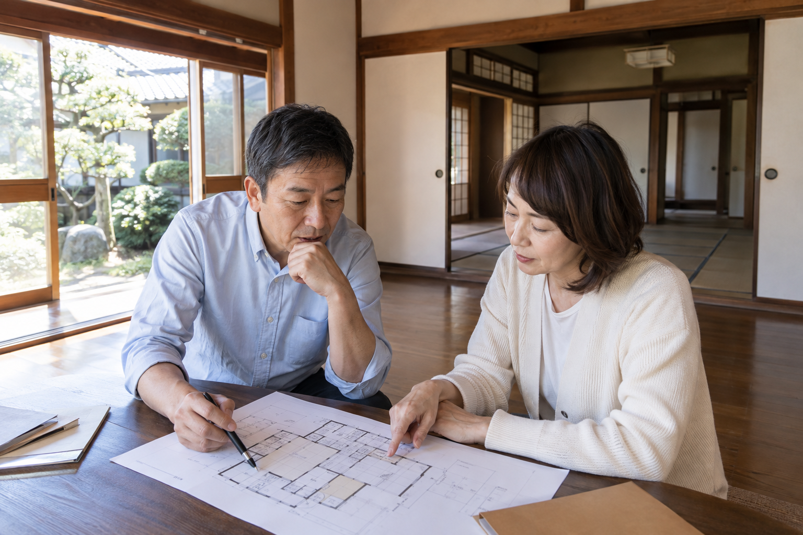

草刈りのためだけに、週末に車を走らせる。固定資産税の通知が来るたびに、「あの土地、何かに使えないかな」と家族で話す。そんなところへ駐車場の提案が届くと、ひとまず話を聞いてみたくなります。
ただ、最初に届いた提案が、その土地の可能性のすべてではありません。建てて貸す方法もあれば、土地のまま貸す方法もある。家が残っているなら、その建物を活かせるかもしれません。土地活用の最初の一歩は、契約先を決めることより、選べる方法を知ることだと私は思います。
受け継いだ土地や使っていない土地には、駐車場、賃貸住宅、土地貸し、売却などの選択肢があります。収入だけでなく、初期費用、管理の手間、将来の使い方から自分たちに合う方法を考えます。
公開日：未定
土地活用・比較 文｜エイスケ（住宅と教育の専門家）
文｜エイスケ（住宅と教育の専門家）
草刈りのためだけに、週末に車を走らせる。固定資産税の通知が来るたびに、「あの土地、何かに使えないかな」と家族で話す。そんなところへ駐車場の提案が届くと、ひとまず話を聞いてみたくなります。
ただ、最初に届いた提案が、その土地の可能性のすべてではありません。建てて貸す方法もあれば、土地のまま貸す方法もある。家が残っているなら、その建物を活かせるかもしれません。土地活用の最初の一歩は、契約先を決めることより、選べる方法を知ることだと私は思います。
「土地活用」と聞くと、アパートや駐車場を思い浮かべるかもしれません。実際には、建物を持って貸すのか、土地だけを貸すのか、自分で使うのかで、お金も手間も大きく変わります。まずは次の候補を同じ紙に並べてみてください。
| 選択肢 | 使い方 | 最初に確かめたいこと |
|---|---|---|
| 月極駐車場・時間貸し駐車場 | 建物を建てず、車を置く場所として貸す | 周辺の需要と出入りのしやすさ。舗装・精算機・管理費を誰が負担するか |
| アパート・戸建て賃貸を新築する | 土地に建物を建て、家賃収入を得る | 建築費と借入の負担。空室や将来の修繕があっても続けられるか |
| 残っている家を貸す | 建物の状態に応じて、必要な修繕や改修をして貸す | 借り手が求める設備と改修費の釣り合い。故障時の対応 |
| 土地を貸し、相手が建てて使う | 事業者などに土地を貸して地代を得る | 用途と契約期間。将来、自分たちが使いたい時期と両立するか |
| 資材置き場・収納施設などに使う | 住まい以外の用途で貸す・運営する | 車両の出入り、音や景観、用途の制限。コンテナ等の設置も事前確認 |
| 自分や家族で使う・管理しながら保有する | 住まい、仕事場、庭などに使う。将来のために残す | 維持費を払う理由があるか。草刈りなどを誰が続けるか |
| 売却する | 持ち続ける負担を減らし、資金を別の目的に回す | 売値だけでなく測量・解体・仲介・税金等を引いた金額。家族の意向 |
この一覧は、すべての土地で実現できるメニューではありません。広さや形、道路との接し方、地域のルールによって候補は絞られます。それでも、最初から一つに決めてしまうより、比較するための質問が増えます。
例えば、同じ住宅地の土地でも、「数年後に子どもが家を建てるかもしれない」家族と、「遠方に住んでいて管理を手放したい」家族では、選び方が違います。
前者なら、将来使う時に終了できる契約か、元に戻す費用がいくらかが重要です。駐車場も候補ですが、短期間の収入で整備費を回収できるとは限りません。建物を建てるための土地貸しは長期の契約になり得るので、自分たちの予定と合わせて考えます。
後者なら、管理委託の費用まで入れて貸す方法と、売却する方法を比べたいところです。建物が残っていて、借り手が見込めるなら、必要な部分を直して戸建てとして貸す案も加えられます。
先に決めておくのは「何を建てるか」ではなく、「この土地と、この先どう付き合いたいか」。毎月の収入を増やしたいのか、管理のための往復を減らしたいのかを言葉にすると、提案の見方が変わります。
周囲に駐車場が少ないからといって、必ず借り手がいるとは限りません。戸建ての敷地内に駐車できる地域なのか、近くの事業所で従業員用の駐車場が足りないのか。同じ「住宅地」でも需要は違います。
賃貸住宅なら、単身者と子育て世帯のどちらを想定するかで、間取りや駐車台数が変わります。近くの募集物件は、家賃だけでなく、どれくらい募集が続いているかまで見ておきたい。地域の不動産事業者には「この広さなら、誰が借りそうですか」と聞いてみます。
私は住宅の計画を見る時、図面の中に部屋や駐車区画が収まるかだけでなく、毎日の使いやすさを考えます。車の切り返し、荷物の出し入れ、雨の日の移動。こうした使い勝手は、面積と利回りだけでは見えてきません。
現地での確認には、登記事項証明書、公図や測量図、固定資産税の通知書を用意します。建物があれば図面と修繕履歴も役立ちます。境界や接道、建てられる用途は専門家と確かめ、机上の候補を現実の計画へ近づけます。農地の場合は、転用などの手続きも先に確認が必要です。
比較する数字は、売上よりも手元に残るお金です。家賃や駐車料金から、管理費、税金、保険料、修繕のために取っておく分を差し引きます。借入をするなら返済も引き、収入が減った場合の家計まで見ておきます。
例えば月8,000円で6台分の駐車場なら、満車の年間売上は57万6,000円です。ここで平均の稼働率を変えてみます。次は相場ではなく、収支の見方を確かめるための仮の計算です。
| 仮定 | 年間売上 | 年間経費12万円を引いた額 |
|---|---|---|
| 稼働率80％ | 46万800円 | 34万800円 |
| 稼働率50％ | 28万8,000円 | 16万8,000円 |
この差引額から、初期の整備費を回収していきます。仮に整備費が100万円なら単純計算で約2.9年と約6.0年。同じ駐車場でも、埋まり方で見え方が変わります。この例には土地取得費、借入返済、所得税等は含めていません。
アパート案なら建築費と将来の大きな修繕、土地貸し案なら所有者側に残る費用、売却案なら諸費用を引いた売却代金を並べます。比較表には「始める費用」「毎年の収支」「やめる費用」の欄をつくると、収入だけの比較を避けられます。
サブリースを利用する賃貸住宅でも、家賃の見直しや修繕費の負担、中途解約の条件は確認が必要です。「任せられる」と「負担がなくなる」は同じ意味ではありません。
空き家を壊して駐車場にするなら、解体費と整備費に加え、土地の固定資産税等を確認します。住宅用地の特例が外れると、税負担が増える場合があります。解体の見積もりを取る段階で、自治体の窓口に変更後の用途を伝えると、計画に織り込めます。
「砂利なら安く、アスファルトなら税金が高い」という話も、少し整理が必要です。土地そのものへの課税と、事業用の舗装や設備に対する償却資産の課税は別です。豊明市の申告案内では、舗装路面の例に砂利も挙がっています。砂利だから課税対象にならないと決めず、整備内容を示して申告や課税の扱いを確認します。
親の土地に子どもが費用を出して建てる、土地や建物の名義を変える、といった計画では、贈与税などの確認も欠かせません。誰が所有し、誰が支払い、誰が収入を受け取るのかを整理して税理士へ相談します。
家族との相談は、提案が固まる前に。兄弟が将来使うつもりだったり、管理を頼まれる人が遠方だったりすると、収支が良くても続けにくくなります。共有者がいる場合の同意や契約手続きは、家族の希望を聞くこととは分けて確認します。
土地を持っているから、必ず何かを建てなければならないわけではありません。私は、選択肢を持っていること自体を大切にしてほしいと思っています。
提案する会社には、それぞれ得意な分野があります。アパートの提案を受けたら、別の窓口で土地貸しや売却も聞いてみる。駐車場がよさそうなら、周辺の需要と初期費用を自分でも確かめる。一つの提案を入口にしながら、比較する余地を残せます。
家族で「残したいもの」と「これ以上負担にしたくないこと」を話したうえで、候補を二つか三つに絞ってみてください。大きな収入を生む計画より、無理なく付き合える方法が合う家族もいます。草刈りのたびに気が重くなる土地を、これからの暮らしに役立つ形へ変える。その方法は、一つではありません。

所在地、面積、所有者、現在の使い方が分かる資料に、家族の希望と使える予算を添えます。測量図などがなくても、まず手元の資料から始め、何が不足しているかを相談先に聞けます。
隣地の人が駐車や庭として使いたい場合など、広く募集する以外の可能性もあります。車の出入りや境界を確認し、近隣の需要も含めて検討します。
安全性と不具合を確認したうえで、借り手が求める設備と賃料に合う工事を選びます。まず借り手の需要を聞いてから改修範囲を決めると、不要な工事を減らせます。
利用者との契約、運営会社との契約、精算機や舗装の撤去費によります。「将来家を建てたい」などの予定は、契約前に伝えて終了条件を確認します。
候補の整理や、同じ前提で計算を比べる補助には使えます。家賃や工事費は現地の見積もりで置き換え、法規制や税務は専門家に確かめます。
将来使う目的があり、管理費を負担できるなら保有も一案です。「次の家族会議までに需要を調べる」など見直す時期を決めると、放置したままになりにくくなります。
この記事を書いた人｜エイスケ
1986年生まれ。実家の工務店・不動産に10年間従事したのち、教育の世界へ。住宅と教育、両方の視点から「豊かな暮らし」をテーマに執筆します。